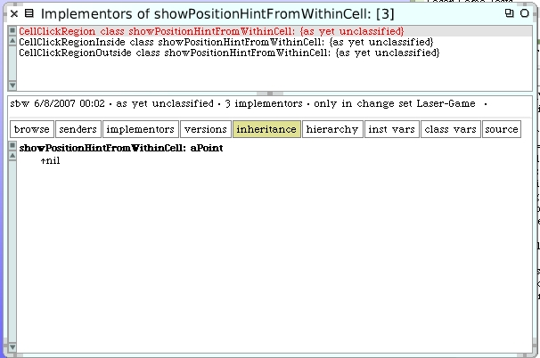

Take a look at the #showPositionHintFromWithinBoardOffset: instance method in the MirrorCellRenderer class.
There are some opportunities to refactor and clean-up in here. The code that creates the temporary variable "pushRegionClass" is a little confusing since it's no longer just for "push" regions and now answers "rotate" regions too. But that's just an issue with its name. After we create that variable we first check if it was nil and if it was not, we fetch the arrow. Then right after we get the arrow we scale it and calculate and offset to locate the arrow properly within the cell.
Another approach would be to get the arrow, already scaled, directly from the region class. And since the offset is likely to also be related to which arrow we get, we could also ask the region for the correct offset value too. The method #showPositionHintFromWithinCell: seems to be mis-named since that's not what it's doing.
We could pass back both the scaled arrow form and the correct offset by putting them together in a simple object like an Association. Let's try it.
If we look for implementors of #showPositionHintFromWithinCell: we find it in three places. It's defined in the common superclass and again on each of the "inside" and "outside" click region classes. All 3 implementors are class methods.
We begin by writing a new method on the superclass. It answers nil.

For the inside click region we implement the method using pieces from the old hints code. We will answer an Association where the key is the arrow offset and the value is the scaled arrow form.

Here's the new similar implementation for the outside click region.
We know we will come back and probably adjust the offset later. Now we get to use our new method.
Delete the old #showPositionHintFromWithinCell: class method from the 3 places where it's defined. We no longer need this method. Now we go back and tweak the scale and offset for the rotation arrows.
When you move the cursor around over the mirror cells the rotate arrows look better now.